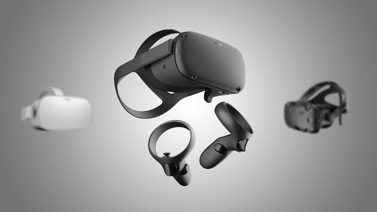

Diseñar la composición visual y el comportamiento temporal de una GUI es una
parte importante de la programación de aplicaciones en el campo de la
interacción persona-ordenador. Su objetivo es mejorar la eficiencia y
la facilidad de uso del diseño lógico subyacente de un programa almacenado,
una disciplina de diseño llamada usabilidad. Varios métodos de diseño centrado
en el usuario se utilizan para garantizar que el lenguaje visual introducido
en el diseño se adapta bien a las tareas.
Las características visibles de la interfaz gráfica de una aplicación
a veces se llaman cromo o GUI. ​ Normalmente, los usuarios interactúan
con la información mediante la manipulación visual de widgets que
permitan interacciones adecuadas al tipo de datos que tienen. Los
widgets de una interfaz bien diseñada se seleccionan para apoyar
las acciones necesarias para alcanzar los objetivos de los usuarios.
La interfaz es el medio de comunicación entre las
funciones mentales o cognitivas de un individuo,
cuyas señales eléctricas son captadas,
pre-procesadas y clasificadas para poder
comunicarse a un medio externo, ya sea una
computadora, dispositivo móvil o un hardware
específico. Como un medio de comunicación,
la interfaz debería responder a cuatro pautas
básicas de eficiencia: credibilidad, novedad y
inámica (dependiendo de la velocidad de transmisión);
contenidos dentro de una cadena mediática de información;
a lo que hoy le sumamos la participación interactiva.
Herramientas y software para el modelado de GUI:
Existen diversas herramientas y software que permiten diseñar y prototipar interfaces gráficas, algunas de ellas son:

El diseño de la comunicación se centra en definir las zonas
en pantalla que hacen posible que el usuario y el programa
de computador se entiendan. El micromundo es una situación,
ambiente o argumento para desarrollar las actividades de aprendizaje.
La interfaz hace que este micromundo tome forma, pero además
sirve para llevar a cabo opciones de control.
El modelado de la interfaz gráfica (GUI) en una aplicación multimedia
se enfoca en crear una experiencia de usuario visualmente atractiva y
fácil de usar, utilizando elementos como iconos, botones, menús y otros
gráficos para facilitar la interacción con la aplicación. Se trata de un
proceso que involucra la selección de colores, tipografías, disposición
de elementos y la creación de flujos de navegación intuitivos para que los
usuarios puedan acceder fácilmente a las funciones multimedia de la aplicación.
